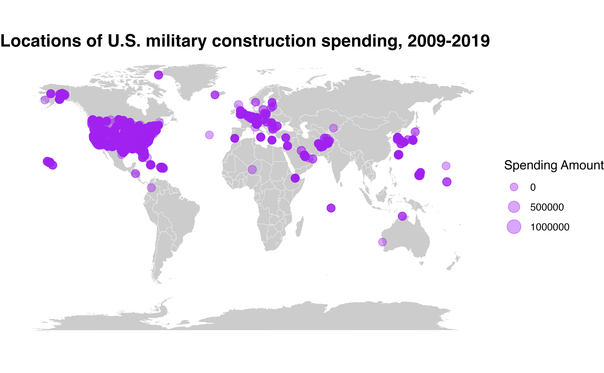

This page provides an overview for the get_builddata()
function, highlighting some of its potential uses.
First things first—let’s load the troopdata package
Basic Use
The get_builddata() function returns a data frame
containing geocoded location-project-year military construction data.
The basic arguments function the same as compared to the previous
functions. The primary difference is that the data cover fiscal years
2000 through 2026, as published in the Department of Defense Comptroller
Annual Report C-1 exhibits. Note there are also many observations
included that contain amounts, but do not disclose location names or
other information.
hostlist <- c(200, 260, 211) # United Kingdom, Germany, Belgium (Gleditsch and Ward codes)
buildexample <- get_builddata(host = hostlist, startyear = 2008, endyear = 2019)
#> Warning: Spending values are in thousands of current US dollars.
#> Warning: Data may include unspecified locations and zero or negative spending
#> values.
head(buildexample)
#> # A tibble: 6 × 42
#> gwcode iso3c state_country state_country_name state_country_sort fiscal_year
#> <dbl> <chr> <chr> <chr> <chr> <dbl>
#> 1 211 BEL BE NA NA 2008
#> 2 211 BEL BE Belgium NA 2010
#> 3 211 BEL BE Belgium NA 2010
#> 4 211 BEL BE Belgium NA 2010
#> 5 211 BEL BE Belgium NA 2011
#> 6 211 BEL BE Belgium NA 2011
#> # ℹ 36 more variables: location_name <chr>, location_name_reported <chr>,
#> # location_full_name <chr>, location_code <chr>, latitude <dbl>,
#> # longitude <dbl>, geo_source <chr>, organization <chr>,
#> # organization_reported <chr>, project_number <chr>, project_title <chr>,
#> # project_title_reported <chr>, appn_title <chr>, budget_activity <dbl>,
#> # budget_activity_title <chr>, budget_activity_title_reported <chr>,
#> # facility_group_title <chr>, facility_category_code <chr>, …The host argument takes ISO3C codes or Gleditsch and
Ward country codes, the same numeric codes the troop deployment data
use. Territories carry the same ad hoc codes as in the troop data, so
Guam is 1008 (or "GUM") and Puerto Rico is 6 (or
"PRI") in both. The data also include construction inside
the United States, which you can get with host = "USA" or
host = 2. In fact most of the rows are projects in the
United States. Leaving host at its default returns
everything. Note that startyear and endyear
have no defaults in this function, so you always need to supply
both.
There are several other ways to narrow things down. The
location and project arguments search
installation names and project titles, organization picks
out a service or defense agency, and facility_category and
budget_activity filter on the type of facility and the
budget activity. For host, organization,
facility_category and budget_activity, a value
that does not match anything in the data returns an error that tells you
where to look, rather than an empty data frame. The
location and project searches simply return no
rows when nothing matches.
ramstein <- get_builddata(location = "Ramstein", startyear = 2010, endyear = 2020)
#> Warning: Spending values are in thousands of current US dollars.
#> Warning: Data may include unspecified locations and zero or negative spending
#> values.
ramstein[, c("fiscal_year", "location_name", "organization", "project_title", "appn_amount")]
#> # A tibble: 9 × 5
#> fiscal_year location_name organization project_title appn_amount
#> <dbl> <chr> <chr> <chr> <dbl>
#> 1 2010 Ramstein AB Air Force Contingency … 23200
#> 2 2010 Ramstein AB Air Force Construct AG… 11500
#> 3 2011 Ramstein AB Air Force UAS SATCOM R… 10476
#> 4 2011 Ramstein AB Air Force Construct C-… 7954
#> 5 2011 Ramstein AB Air Force Deicing Flui… 2671
#> 6 2012 Ramstein AB Air Force Dormitory (1… 34697
#> 7 2014 Ramstein AB Department of Defense Edu… Ramstein Hig… 98762
#> 8 2017 Ramstein AB Air Force 37 As Squadr… 13437
#> 9 2019 Ramstein AB Air Force EDI - KMC DA… 119000How values are handled
A few things are worth knowing before you start adding up dollars.
Each row is one line of a report. A row is a single project at a single location in a single fiscal year. It is not a country total. To get spending by country and year you need to add the rows up yourself:
library(dplyr)
buildexample %>%
group_by(iso3c, fiscal_year) %>%
summarise(projects = n(),
appropriations = sum(appn_amount, na.rm = TRUE)) %>%
head()
#> # A tibble: 6 × 4
#> # Groups: iso3c [1]
#> iso3c fiscal_year projects appropriations
#> <chr> <dbl> <int> <dbl>
#> 1 BEL 2008 1 5992
#> 2 BEL 2010 3 99524
#> 3 BEL 2011 2 98975
#> 4 BEL 2012 1 24118
#> 5 BEL 2013 1 24854
#> 6 BEL 2014 2 67613Amounts are in thousands of current US dollars.
There are four amount columns: appropriations
(appn_amount), authorizations (auth_amount),
authorization of appropriations (auth_appn_amount) and
total obligational authority (toa_amount). They are not
adjusted for inflation. Negative values are real. They show up where
money was rescinded or reprogrammed. Not every report gives every
amount: the FY2006 report has appropriations only, and total
obligational authority is also missing for FY2000. The
spend_type, min_amount and
max_amount arguments let you pick an amount column and
filter on it.
Each fiscal year comes from one report. Every C-1
report covers two or three fiscal years, so the same year appears in
more than one report, often with revised figures. The data take each
fiscal year from the most recent report that covers it, so a
project-year is only counted once. For every year but one that is an
enacted or actual figure. The exception is FY2016, where the only report
we have is the one that requests it. FY2010 also has 26 lines that come
from a request sheet for overseas contingency operations and do not
appear on any enacted sheet. All of these rows are flagged with
is_request, and include_requests = FALSE drops
them.
Some rows have no location. About a quarter of the
rows report an amount under a label such as “Unspecified Worldwide
Locations” rather than a place. These rows have no country code, so they
are only returned when host is left at its default. One
group is an exception: the base realignment and closure lines for FY2007
through FY2016 are filed under that label, but their project titles name
a US installation (for example “USA-224: Fort Hood, TX”). Those rows
carry the US country code and the installation’s coordinates, so
host = "USA" returns them.
Coordinates. The latitude and
longitude columns come from geocoding the location name. A
point is only kept if it falls inside the country or state the row is
filed under. Installations that the geocoder put in the wrong place were
corrected by hand, and the geo_source column tells you
whether a point came from a geocoding service ("arcgis") or
was entered by hand ("manual"). Rows with no location, and
the few locations we could not find, have no coordinates and will drop
out of a map.
Not every column is reported every year. The layout
of the C-1 reports changed over time. Columns such as
transaction_type, project_number and
facility_category_title only exist for some fiscal years,
and filtering on one of them quietly limits you to those years. The help
page for build_data_20260918 lists the coverage of each
column.
Applications
As with the base data you can build cool maps using the construction data. You can also size the points according to the amount of spending associated with a particular location, adding some additional details to maps and other figures.
library(ggplot2)
map <- ggplot2::map_data("world")
basepoints <- troopdata::get_builddata(host = NA, startyear = 2009, endyear = 2019)
buildmap <- ggplot() +
geom_polygon(data = map, aes(x = long, y = lat, group = group), fill = "gray80", color = "white", size = 0.1) +
geom_point(data = basepoints, aes(x = longitude, y = latitude, size = toa_amount), color = "purple", alpha = 0.4) +
coord_equal(ratio = 1.3) +
theme_void() +
theme(plot.title = element_text(face = "bold", size = 15)) +
labs(title = "Locations of U.S. military construction spending, 2009-2019",
size = "Spending Amount")
buildmap